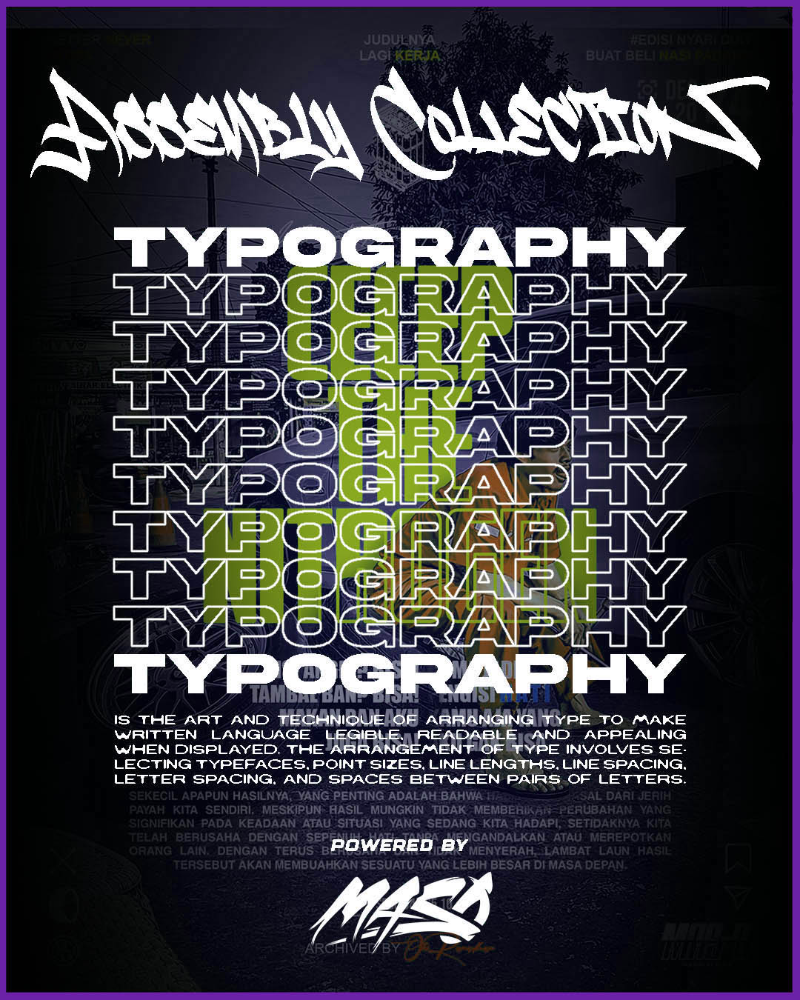
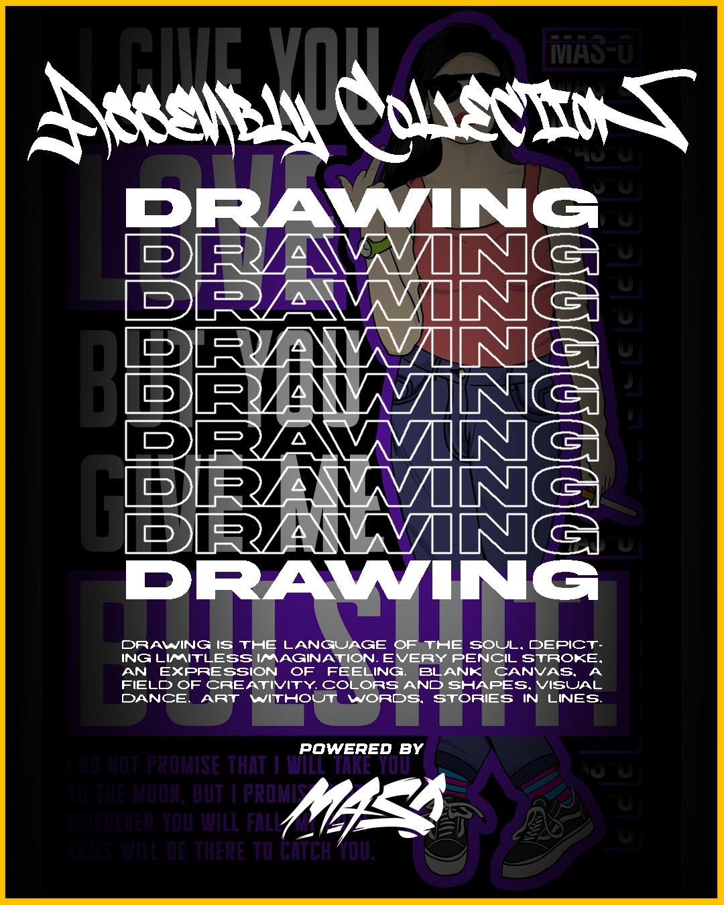
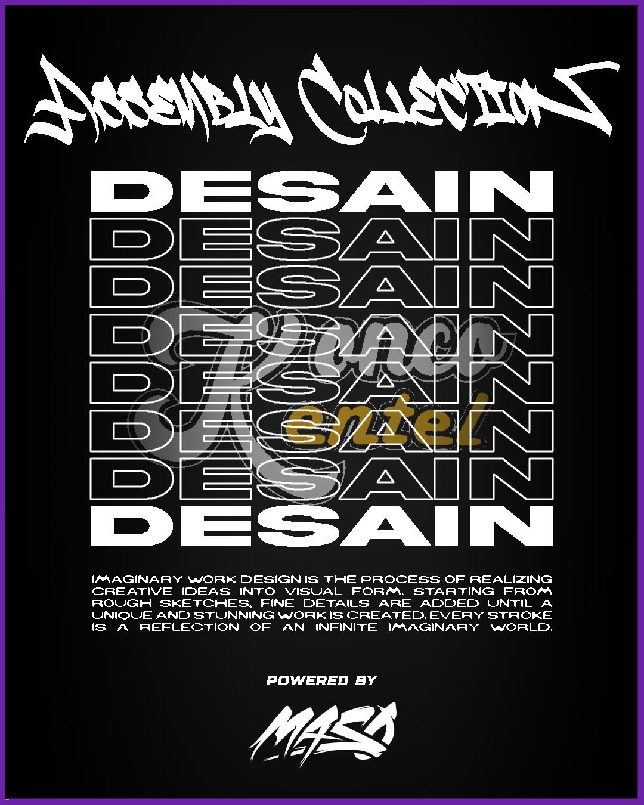

Pengalaman Sing Nggawe Aku
Sugeng rawuh ing portofolioku! asil kerja keras, begadang, lan ngombe kopi sliter. Isine bisa uga ora abot kaya skripsi, nanging kudu cukup kanggo ngematake sampeyan. Ora masalah, sing penting aku wis nyoba.
Sebuah karya dari saya

Typography is the art of arranging typefaces, fonts, and text to make it readable, clear, and visually appealing. It's used in many places, including books, websites, street signs, and product packaging.

Membentuk citra dengan menggunakan alat dan teknik tertentu. Menggambar juga bisa diartikan sebagai membuat tanda-tanda pada permukaan dengan mengolah goresan dari alat gambar.

Punya ide desain baju yang pengen diwujudkan? Aku pernah bikin beberapa project desain baju dan mungkin bisa bantu kamu.

Hanya desain amatir, tapi saya senang bisa mencoba. Semoga bisa lebih baik lagi ke depannya.